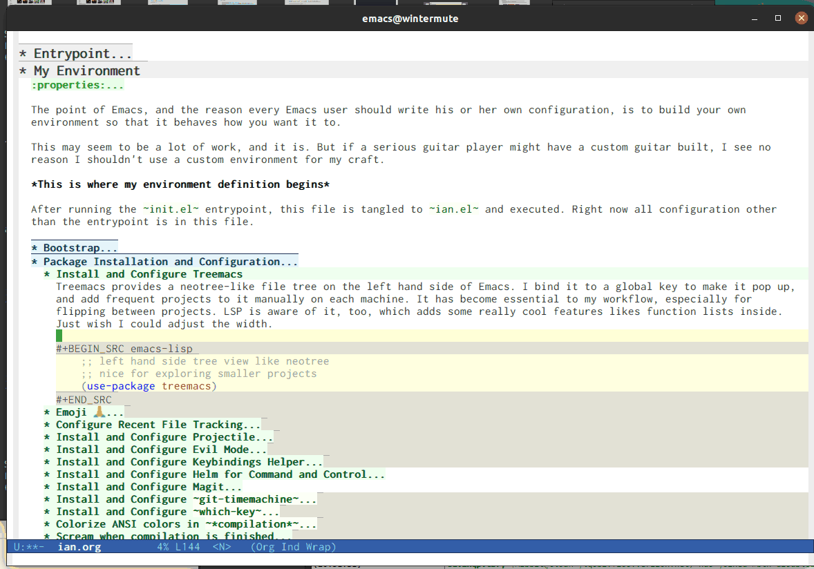

My Emacs Config
Table of Contents
What is this?
This is my Emacs configuration file, which I install at ~/.emacs.d/ian.org. It's written in Org mode syntax, which exports to a number of other formats, including HTML and Markdown, and allows extraction of source code blocks into plain source code files through a process called "tangling," so the source code embedded below is ultimately run as my real programming environment.
I have chosen to write a fully custom Emacs environment, eschewing projects like Spacemacs and Doom Emacs for my own custom configuration because I find Emacs Lisp a joy to write – combined with its native environment, Emacs, Emacs Lisp is an incredibly powerful addition to my workflow, and writing my own config has helped me master both the editor and the language it is largely written in, and with which it is customized.
If you're reading this on the web, the source code for this file can be found on Github. If you want to try out this configuration file, run the following:
#!/bin/bash git clone https://github.com/gigawhitlocks/emacs-configs ~/.emacs.d mv ~/.emacs.d/local/wintermute.org ~/.emacs.d/local/"$(hostname)".org emacs
No guarantees, though. This stuff is for personal use, so it isn't tested on systems I don't have! Hopefully this file is readable enough that individual snippets are understandable and can be taken a la carté.
Here is a screenshot of this file being edited with this configuration:

Entrypoint
Using Org for one's configuration is not standard Emacs behavior, so I must first configure Emacs to load this file (ian.org) as its first action when it starts up. By default, Emacs runs init.el at the beginning of execution. The following piece of code tangles to init.el, and init.el containing the following must be checked in, because this snippet tangles this file (ian.org), so it is this piece of code that starts the whole process of loading all of this configuration.
Since I want most of the configuration here in ian.org, init.el just holds the bare minimum code so that the bulk of the configuration can be checked in once, inside this file, rather than twice like the contents of init.el. I'm using an example from orgmode.org to load the Org files and tangle them, then require the output of this file from the call to tangle, run main, and I'm done.
NOTE The filename ian.org is hardcoded in this entrypoint routine in the place of the main configuration file. This is because, despite the public nature of my config, it is not intended to be used in whole by anyone but me. This allows me certain shortcuts, like hostname-specific configuration, and convention-over-configuration in ways I find intuitive without overly detailed documentation. It is my config, after all, so my main config file is ian.org.
;;; init --- the Emacs entrypoint ;;; Commentary: ;;; ;;; Just load my customizations and execute -- org-mode bootstrap from ;;; https://orgmode.org/worg/org-contrib/babel/intro.html#literate-emacs-init ;;; ;;; Code: ;; Load up Org Mode and (now included) Org Babel for elisp embedded in Org Mode files (setq dotfiles-dir (file-name-directory (or (buffer-file-name) load-file-name))) (let* ((org-dir (expand-file-name "lisp" (expand-file-name "org" (expand-file-name "src" dotfiles-dir)))) (org-contrib-dir (expand-file-name "lisp" (expand-file-name "contrib" (expand-file-name ".." org-dir)))) (load-path (append (list org-dir org-contrib-dir) (or load-path nil)))) ;; load up Org-mode and Org-babel (require 'org-install) (require 'ob-tangle)) ;; load up all literate org-mode files in this directory (mapc #'org-babel-load-file (directory-files dotfiles-dir t "\\.org$")) (require '~/.emacs.d/ian.el) ;; Load automatic and interactive customizations from this computer (shell-command "touch ~/.emacs.d/.emacs-custom.el") (setq custom-file "~/.emacs.d/.emacs-custom.el") (load custom-file) (provide 'init)
The rest of the code that is executed begins with the routines defined by this file.
My Environment
The point of Emacs, and the reason every Emacs user should write his or her own configuration, is to build your own environment so that it behaves how you want it to.
This may seem to be a lot of work, and it is. But if a serious guitar player might have a custom guitar built, I see no reason I shouldn't use a custom environment for my craft.
This is where my environment definition begins
After running the init.el entrypoint, this file is tangled to ian.el and executed. Right now all configuration other than the entrypoint is in this file.
Bootstrap
The first thing that must be done is to prepare to manage third party packages, because my config is built on top of the work of many third party packages. I like to install and manage all of the packages I use as part of my configuration so that it can be duplicated across computers (more or less) and managed with git, so I use use-package to ensure that packages are installed from my configuration file.
Bootstrap sets up the ELPA, Melpa, and Org Mode repositories, sets up the package manager, installs use-package if it is not found, configures use-package and installs a few extra packages that acoutrement use-package and will be used heavily throughout.
;;; ian.el --- my custom emacs config with no one else considered because fuck you ;;; naw but really I just don't have the time for that ;;; ;;; Commentary: ;;; ;;; After throwing away an old Emacs config, built when I had no idea what I was doing ;;; and abandoning the "wisdom of the crowds"-configured Spacemacs for better control ;;; here we are for better or worse ;;; ;;; Code: ;; manual PATH management (setenv "PATH" (concat (getenv "PATH") ":/usr/local/bin")) (add-to-list 'exec-path "/usr/local/bin" t) (require 'package) (setq package-archives '(("gnu" . "https://elpa.gnu.org/packages/") ("melpa" . "https://melpa.org/packages/") ("org" . "http://orgmode.org/elpa/"))) (package-initialize) ;; Now install use-package to enable us to use it ;; to manage the rest of our packages (unless (package-installed-p 'use-package) (progn (unless package-archive-contents (package-refresh-contents)) (package-install 'use-package))) ;; set ensure to be the default (require 'use-package-ensure) (setq use-package-always-ensure t) (use-package use-package-ensure-system-package) ;; these go in bootstrap because packages installed ;; with use-package use :diminish and :delight (use-package diminish) (use-package delight)
Once this is done I need to install and configure any third party packages that are used in many modes throughout Emacs. Some of these modes fundamentally change the Emacs experience and need to be present before everything can be configured.
Package Installation and Configuration
First I need to install packages with a large effect and which other packages are likely to depend. These are packages essential to my workflow. Configuration here should be config that must run early, before variables are set or language-related packages, which will likely rely on these being set.
Install and Configure Treemacs
Treemacs provides a neotree-like file tree on the left hand side of Emacs. I bind it to a global key to make it pop up, and add frequent projects to it manually on each machine. It has become essential to my workflow, especially for flipping between projects. LSP is aware of it, too, which adds some really cool features likes function lists inside. Just wish I could adjust the width.

;; left hand side tree view like neotree ;; nice for exploring smaller projects (use-package treemacs)
Emoji 🙏
Provided by emojify.
;; 🙌 Emoji! 🙌 (use-package emojify :config (setq emojify-download-emojis-p t) (emojify-set-emoji-styles '(unicode)) (add-hook 'after-init-hook #'global-emojify-mode))
Configure Recent File Tracking
Emacs comes with recentf-mode which helps me remember what I was doing after I restart my session.
;; recent files mode (recentf-mode 1) (setq recentf-max-menu-items 25) (setq recentf-max-saved-items 25)
Install and Configure Projectile
projectile is a fantastic package that provides all kinds of project context-aware functions for things like:
- running grep, but only inside the project
- compiling the project from the project root without doing anything
- find files within the project, again without having to do anything extra
It's great, it gets installed early, can't live without it. 💘 projectile

(use-package projectile :delight) (use-package helm-projectile) (use-package treemacs-projectile) (projectile-mode +1)
Install and Configure Evil Mode
evil-mode fundamentally changes Emacs so that while editing all of the modes and keybindings from vim are present.
It's controversial but I think modal editing is brilliant and have been using vim bindings since the mid-aughts. No going back.
(defun setup-evil () "Install and configure evil-mode and related bindings." (use-package evil :init (setq evil-want-keybinding nil) (setq evil-want-integration t) :config (evil-mode 1)) (use-package evil-collection :after evil :config (evil-collection-init)) ;; add fd as a remap for esc (use-package evil-escape :delight) (evil-escape-mode 1) (use-package evil-surround :config (global-evil-surround-mode 1)) (setq-default evil-escape-key-sequence "fd"))
Install and Configure Keybindings Helper
General provides more consistent and convenient keybindings, especially with evil-mode.
It's mostly used below in the global keybindings section.
(use-package general :init (setup-evil) :config (general-evil-setup))
Install and Configure Helm for Command and Control
Helm is a full-featured command and control package that fundamentally alters a number of core Emacs functions, including what appears when you press M-x (with the way I have it configured, anyway).
(use-package helm :delight :config (use-package helm-descbinds :config (helm-descbinds-mode)) (global-set-key (kbd "M-x") #'helm-M-x) (define-key helm-find-files-map "\t" 'helm-execute-persistent-action) (setq helm-always-two-windows nil) (setq helm-default-display-buffer-functions '(display-buffer-in-side-window)) (helm-mode 1))
Install and Configure Magit
Magit is an incredible integrated git UI for Emacs.

(use-package magit) ;; disable the default emacs vc because git is all I use, ;; for I am a simple man (setq vc-handled-backends nil) (use-package evil-magit)
The Magit author publishes an additional package called forge. Forge lets you interact with Github and Gitlab from inside of Emacs. There's planned support for Gogs, Gitea, etc.
(use-package forge :after magit)
Forge has to be configured with something like .authinfo or preferably authinfo.gpg. Create a access token through the web UI of Github and place on the first line in $HOME/.authinfo with the following format:
host api.github.com login gigawhitlocks^forge password TOKEN
but obviously replace TOKEN with the access token. And use .authinfo.gpg and encrypt it. Don't just use .authinfo.
Also, I've only tried this with GitHub. But at least in the case of GitHub, once Forge is set up, it adds some niceties like this to the Magit overview. In this case, I'm looking at the history of a project and Forge automatically adds a link to the PR displayed as part of the commit title in history:

Install and Configure git-timemachine
git-timeline lets you step through the history of a file.

(use-package git-timemachine) ;; This lets git-timemachine's bindings take precedence over evils' ;; (got lucky and happened to find this while looking for the package name, ha!) ;; @see https://bitbucket.org/lyro/evil/issue/511/let-certain-minor-modes-key-bindings (eval-after-load 'git-timemachine '(progn (evil-make-overriding-map git-timemachine-mode-map 'normal) ;; force update evil keymaps after git-timemachine-mode loaded (add-hook 'git-timemachine-mode-hook #'evil-normalize-keymaps)))
Install and Configure which-key
It can be difficult to to remember and discover all of the available shortcuts in Emacs, so which-key pops up a special buffer to show you available shortcuts whenever you pause in the middle of a keyboard shortcut for more than a few seconds. It's really lovely.

(use-package which-key :delight :init (which-key-mode) (which-key-setup-minibuffer))
Colorize ANSI colors in *compilation*
If you run a command through M-x compile by default Emacs prints ANSI codes literally, but a lot of tools use these for colors and this makes it so Emacs shows colors in the *compilation* buffer.
(defun ansi () ;; enable ANSI escape codes in compilation buffer (use-package ansi-color) ;; slightly modified from ;; https://endlessparentheses.com/ansi-colors-in-the-compilation-buffer-output.html (defun colorize-compilation () "Colorize from `compilation-filter-start' to `point'." (let ((inhibit-read-only t)) (ansi-color-apply-on-region compilation-filter-start (point)))) (add-hook 'compilation-filter-hook #'colorize-compilation)) (ansi)
Scream when compilation is finished
Sometimes when the compile process takes more than a few seconds I change windows and get distracted. This hook plays a file through aplay (something else that will break on a non-Linux machine) to notify me that compilation is done. I was looking for something like a kitchen timer but I couldn't find one so right now the vendored sound is the Wilhelm Scream.
(defun isw-play-chime (buffer msg) (start-process-shell-command "chime" "*Messages*" "aplay /home/ian/.emacs.d/vendor/chime.wav")) (add-to-list 'compilation-finish-functions 'isw-play-chime)
Configure the Startup Splashscreen
Following Spacemacs's style, I use the emacs-dashboard project and all-the-icons to provide an aesthetically pleasing splash screen with useful links to recently used files on launch.
Actually, looking at the project page, the icons don't seem to be working for me. Maybe I need to enable them. I'll investigate later.

;; first disable the default startup screen (setq inhibit-startup-screen t) (use-package all-the-icons) (use-package dashboard :config (dashboard-setup-startup-hook) (setq dashboard-startup-banner 'logo) (setq dashboard-center-content t) (setq dashboard-items '((recents . 5) (bookmarks . 5) (projects . 5)) ) )
Install and Configure GNU Hyperbole
GNU Hyperbole adds a bunch of window control features, namely the ability to swap two windows by hitting Shift + Right Click and dragging the window to a new position!
It adds a slew of other features as well – hyperlinks between documents, a rolodex, a list builder. I don't use it all, but the parts I use are pretty critical.
;; gnu hyperbole (use-package hyperbole)
Install templating tool and default snippets
YASnippet is really cool and allow fast insertion of boilerplate using templates. I've been meaning to use this more. Here are the YASnippet docs.

OK that example maybe isn't the best, but if you have yas-insert-snippet bound to something and you're inserting something more complex it's.. probably worthwhile. I should use it more. You can also write your own snippets. I should figure that out.
(use-package yasnippet :delight :config (use-package yasnippet-snippets))
Extra Packages
Packages with a smaller effect on the experience.
git-gutter shows unstaged changes in the gutter
(use-package git-gutter :delight :config (global-git-gutter-mode +1))
Highlight the current line
I like to highlight the current line so that it is easy to identify where my cursor is.
(global-hl-line-mode) (setq global-hl-line-sticky-flag t)
Rainbow delimiters make it easier to identify matching parentheses
(use-package rainbow-delimiters :config ;; set up rainbow delimiters for Emacs lisp (add-hook 'emacs-lisp-mode-hook #'rainbow-delimiters-mode) )
restart-emacs does what it says on the tin
(use-package restart-emacs)
s is a string manipulation utility
I use this for a trim() function far down below. I think it gets pulled in as a dependency anyway, but in any case it provides a bunch of helper functions and stuff. Docs are here.
(use-package s)
figlet
The description on the package is "Annoy people with big, ascii art text" 🤣
(use-package figlet :ensure-system-package figlet)
a systemd file mode
Just provides syntax highlighting in .unit files.
(use-package systemd)
ranger is a standalone file browser
(use-package ranger :config (setq ranger-show-literal nil))
Install and Configure Company for Auto-Completion
Great tab-complete and auto-complete with Company Mode.
;; auto-completion (use-package company :delight :config ;; enable it everywhere (add-hook 'after-init-hook 'global-company-mode) ;; tab complete! (global-set-key "\t" 'company-complete-common))
Install and Configure Flycheck for Linting
Flycheck is an on-the-fly checker that hooks into most language backends.
;; linter (use-package flycheck :delight ;; enable it everywhere :init (global-flycheck-mode))
Install exec-path-from-shell to manage the PATH
exec-path-from-shell mirrors PATH in zsh or Bash in OS X or Linux into Emacs so that the PATH in the shell and the PATH when calling commands from Emacs are the same.
(use-package exec-path-from-shell :config (when (memq window-system '(mac ns x)) (exec-path-from-shell-initialize)))
Language Configuration
Language Server Protocol
LSP provides a generic interface for text editors to talk to various language servers on the backend. A few languages utilize LSP so it gets configured before the language-specific section.
(use-package lsp-mode :init ;; use flycheck (setq lsp-prefer-flymake nil)) (use-package lsp-ui) (setq lsp-ui-doc-use-childframe t) (use-package company-lsp) (use-package lsp-origami) (use-package lsp-treemacs) (use-package helm-lsp)
YAML
(use-package yaml-mode)
Markdown
(use-package markdown-mode :ensure t :mode (("README\\.md\\'" . gfm-mode) ("\\.md\\'" . gfm-mode) ("\\.markdown\\'" . gfm-mode))) (add-hook 'markdown-mode-hook 'visual-line-mode) (add-hook 'markdown-mode-hook 'variable-pitch-mode) ;; this can go here because it affects Markdown's live preview mode ;; but I should consider putting it somewhere more general maybe? (add-hook 'eww-mode-hook 'visual-line-mode)
Docker
(use-package dockerfile-mode) (add-to-list 'auto-mode-alist '("Dockerfile\\'" . dockerfile-mode)) (put 'dockerfile-image-name 'safe-local-variable #'stringp)
Python
My Python config is really lazy. I think there's a Python language server and that's probably better than anaconda-mode. Incidentally, anaconda-mode doesn't seem to be related to anaconda.io, and I always thought it was. 🤷
Anyway anaconda-mode provides pretty-good completion and goto-definition and that sort of feature, for Python.
(use-package anaconda-mode :config (add-hook 'python-mode-hook 'anaconda-mode) (add-hook 'python-mode-hook 'anaconda-eldoc-mode))
I haven't written Python in awhile so hopefully I remember how this all works. auto-virtualenv looks in $WORKON_HOME for virtualenvs, and then I can run M-x pyvenv-workon RET project RET to choose my virtualenv for project, found in $WORKON_HOME, or a symlink anyway.
(use-package auto-virtualenv) (add-hook 'python-mode-hook 'auto-virtualenv-set-virtualenv) (setenv "WORKON_HOME" "~/.virtualenvs")
So the convention for use is:
- Create a virtualenv as usual for the project
- Symlink it inside ~/.virtualenvs
M-x pyvenv-workon
Go

Go support requires some dependencies. I will try to list them all here. Stuff I have installed has some overlap because of the in-progress move to LSP, but I'll prune it later.
- First,
goitself must be installed, install however, and avalailable on thePATH. gopls, the language server for LSP mentioned above https://github.com/golang/tools/blob/master/gopls/doc/user.md. I have been just running this off ofmasterso I can experience all the latestbugsfeatures, so clone the gopls project (TODO find the url for it and put a link here) andgo installit. After you're donegoplsshould also be on thePATH.golinthas to be installed independently
$ go get https://github.com/golang/lint
Nothing to do with Emacs, but eg also looks really cool:
$ go get golang.org/x/tools/cmd/eg
golangci-lintis a meta linter that calls a bunch of 3rd party linters (configurable) and replaces the old one that used to freeze my computer.go-metalinter, I think, is what it was called. Anyway, it used to crash my computer and apparently that was a common experience. Anywaygolangci-lintmust be installed independently, too:
# install it into ./bin/ $ curl -sSfL https://raw.githubusercontent.com/golangci/golangci-lint/master/install.sh | sh -s v1.23.6
- Initial Setup
(defun set-gopls-lib-dirs () "Add $GOPATH/pkg/mod to the 'library path'." ;; stops lsp from continually asking if Go projects should be imported (setq lsp-clients-go-library-directories (list "/usr" (concat (getenv "GOPATH") "/pkg/mod")))) ;; native go mode (use-package go-mode :hook ((go-mode . lsp-deferred) (go-mode . set-gopls-lib-dirs) (go-mode . yas-minor-mode)) :config ;; fixes ctrl-o after goto-definition by telling evil that godef-jump jumps ;; I don't believe I need to do this anymore, as I use lsp instead of godef now (evil-add-command-properties #'godef-jump :jump t)) ;; load golint if the project has been added (if (file-exists-p (concat (getenv "GOPATH") "/src/golang.org/x/lint/misc/emacs/")) (add-to-list 'load-path (concat (getenv "GOPATH") "/src/golang.org/x/lint/misc/emacs/")) (require 'golint)) ;; enable golangci-lint to work with flycheck (use-package flycheck-golangci-lint :hook (go-mode . flycheck-golangci-lint-setup))
- Functions for Executing Tests
I find it tedious to run
go testand type out the filename to test a specific file or even more tedious to type out the name of a test. Instead I've written a few functions to run tests and put the output in a dismissable buffer. Then these get added to the Go mode key bindings later.(defun delete-go-test-buffer-if-exist () (let ((b (get-buffer "*go test*"))) (if b (kill-buffer "*go test*")))) (defun go-test-project () "Run all Go tests in this project." (interactive) (projectile-with-default-dir (projectile-project-root) (delete-go-test-buffer-if-exist) (split-window-sensibly) (view-buffer "*go test*") (start-process "go test" "*go test*" "go" "test" "./...") (message "Running all tests for project %s" (projectile-project-name)))) (defun go-run-tests-in-file () "Run all the Go tests in this file." (interactive) (let ((filename (buffer-file-name))) (delete-go-test-buffer-if-exist) (split-window-sensibly) (view-buffer "*go test*") (message "Running tests in file %s" filename) (start-process "go test" "*go test*" "go" "test" "-run" (concat "./" filename)))) (defun go-run-test-at-point () "Run the test at point in Go." (interactive) (save-excursion (go-goto-function-name) (delete-go-test-buffer-if-exist) (let ((name (current-word))) (split-window-sensibly) (view-buffer "*go test*") (start-process "go test" "*go test*" "go" "test" "-run" name) (message "Running test %s" name))))
- REPL
Gore provides a REPL and gorepl-mode lets you use it from Emacs. In order to use the REPL from Emacs, you must first install Gore:
go get -u github.com/motemen/gore/cmd/gore
Gore also uses gocode for code completion, so install that (even though Emacs uses go-pls for the same).
go get -u github.com/mdempsky/gocode
Once that's done
gorepl-modeis ready to be installed:(use-package gorepl-mode)
- Specific Keybindings
(general-define-key :states 'normal :keymaps 'go-mode-map ",a" 'go-import-add ",d" 'lsp-describe-thing-at-point ",gg" 'lsp-find-definition ",gt" 'lsp-find-type-definition ",i" 'lsp-find-implementation ",n" 'lsp-rename ",r" 'lsp-find-references ",tt" 'go-run-test-at-point ",tp" 'go-test-project ",tf" 'go-run-tests-in-file ",x" 'lsp-execute-code-action ",lsp" 'lsp-workspace-restart "gd" 'lsp-find-definition ;; using the ,c namespace for repl stuff to follow the C-c convention ;; found in other places in Emacs ",cc" 'gorepl-run ",cg" 'gorepl-run-load-current-file ",cx" 'gorepl-eval-region ",cl" 'gorepl-eval-line ;; origami-mode works better with lsp than regular evil-mode "TAB" 'origami-toggle-node "zm" 'origami-toggle-node "zM" 'origami-toggle-all-nodes "zc" 'origami-close-node "zC" 'origami-close-node-recursively "zo" 'origami-open-node "zO" 'origami-open-node-recursively ;; except for when it totally breaks lol "zr" 'origami-reset ) (autoload 'go-mode "go-mode" nil t) (add-to-list 'auto-mode-alist '("\\.go\\'" . go-mode))
- Hooks
;; disable "Organize Imports" warning that never goes away (add-hook 'go-mode-hook (lambda () ;; Go likes origami-mode (origami-mode) ;; lsp ui sideline code actions are annoying in Go (setq-local lsp-ui-sideline-show-code-actions nil))) ;; sets the visual tab width to 2 spaces per tab in Go buffers (add-hook 'go-mode-hook (lambda () (set (make-local-variable 'tab-width) 2))) (defun lsp-go-install-save-hooks () (add-hook 'before-save-hook #'lsp-format-buffer t t) (add-hook 'before-save-hook #'lsp-organize-imports t t)) (add-hook 'go-mode-hook #'lsp-go-install-save-hooks)
Web
After some amount of searching and fumbling about I have discovered web-mode which appears to be the one-stop-shop solution for all of your HTML and browser-related needs. It handles a whole slew of web-related languages and templating formats and plays nicely with LSP. It's also the only package that I could find that supported .tsx files at all.
So yay for web-mode!
(use-package web-mode :mode (("\\.html$" . web-mode) ("\\.js$" . web-mode) ("\\.jsx$" . web-mode) ("\\.ts$" . web-mode) ("\\.tsx$" . web-mode) ("\\.css$" . web-mode)) :hook ((web-mode . lsp-deferred)) :config (setq web-mode-enable-css-colorization t) (setq web-mode-enable-auto-pairing t))
- Setting highlighting for special template modes
;; web-mode can provide syntax highlighting for many template ;; engines, but it can't detect the right one if the template uses a generic ending. ;; If a project uses a generic ending for its templates, such ;; as .html, add it below. It would be more elegant to handle this by ;; setting this variable in .dir-locals.el for each project, ;; unfortunately due to this https://github.com/fxbois//issues/799 that ;; is not possible :( (setq web-mode-engines-alist '( ("go" . ".*example_project_dir/.*\\.html\\'") ;; add more projects here.. ))
Shell
Shell mode is pretty good vanilla, but I prefer to use spaces rather than tabs for indents with languages like Bash because they just tend to format more reliably. Tabs are .. theoretically more flexible, so maybe I can come back to consider this.
But for now, disable indent-tabs-mode in shell script editing mode because I have been observing behavior from whitespace-cleanup-mode that when indent-tabs-mode is t it will change 4 spaces to a tab even if there are other spaces being used for indent, even on the same line, and regardless as to the never-ending debate about spaces and tabs and all that, everyone can agree that 1) mixing spaces and tabs is terrible and 2) your editor shouldn't be mixing spaces and tabs automatically at pre-save time.
(add-hook 'sh-mode-hook (lambda () (defvar-local indent-tabs-mode nil)))
Adaptive Wrap and Visual Line Mode
Here I've done some black magic fuckery for a few modes. Heathens in modern languages and also some other prose modes don't wrap their long lines at 80 characters like God intended so instead of using visual-column-mode which I think does something similar but probably would've been easier, I've defined an abomination of a combination of visual-line-mode (built-in) and adaptive-wrap-prefix-mode to dynamically (visually) wrap and indent long lines in languages like Go with no line length limit so they look nice on my screen at any window width and don't change the underlying file — and it's actually pretty cool.
(use-package adaptive-wrap :config (setq-default adaptive-wrap-extra-indent 2) (defun adaptive-and-visual-line-mode (hook) (add-hook hook (lambda () (progn (visual-line-mode) (adaptive-wrap-prefix-mode))))) (mapc 'adaptive-and-visual-line-mode (list 'markdown-mode 'go-mode-hook 'js2-mode-hook 'yaml-mode-hook 'rjsx-mode-hook)) (add-hook 'compilation-mode-hook #'adaptive-wrap-prefix-mode) )
Global Keybindings
(general-create-definer my-leader-def :prefix "SPC") (general-create-definer my-local-leader-def :prefix "SPC m") (defun find-initfile () "Open main config file." (interactive) (find-file "~/.emacs.d/ian.org")) (defun find-initfile-other-frame () "Open main config file in a new frame." (interactive) (find-file-other-frame "~/.emacs.d/ian.org")) (defun reload-initfile () "Reload the main config file." (interactive) (org-babel-tangle "~/.emacs.d/ian.org") (byte-compile-file "~/.emacs.d/ian.el")) (defun close-client-frame () "Exit emacsclient." (interactive) (server-edit "Done")) (general-define-key :keymaps '(normal emacs) "J" 'evil-scroll-page-down "K" 'evil-scroll-page-up) ;; global keybindings with LEADER (my-leader-def 'normal 'override "bb" 'helm-buffers-list "TAB" #'switch-to-prev-buffer "br" 'revert-buffer "bd" 'evil-delete-buffer "cc" 'projectile-compile-project "ec" 'flycheck-clear "el" 'flycheck-list-errors "en" 'flycheck-next-error "ep" 'flycheck-previous-error "Fm" 'make-frame "Fd" 'delete-frame "ff" 'helm-find-files "fr" 'helm-recentf "fed" 'find-initfile "feD" 'find-initfile-other-frame "feR" 'reload-initfile "gb" 'magit-blame "gs" 'magit-status "gg" 'magit "gt" 'git-timemachine "gd" 'magit-diff "h" 'hyperbole "jj" 'bookmark-jump "js" 'bookmark-set "jo" 'org-babel-tangle-jump-to-org "ic" 'insert-char "is" 'yas-insert-snippet "p" 'projectile-command-map "pf" 'helm-projectile-find-file "p!" 'projectile-run-async-shell-command-in-root "si" 'yas-insert-snippet "sn" 'yas-new-snippet "sp" 'helm-projectile-ack "qq" 'save-buffers-kill-terminal "qr" 'restart-emacs "tn" 'display-line-numbers-mode "tt" 'toggle-transparency "tr" 'treemacs "ta" 'treemacs-add-project-to-workspace "w-" 'split-window-below "w/" 'split-window-right "wj" 'evil-window-down "wk" 'evil-window-up "wh" 'evil-window-left "wl" 'evil-window-right "wd" 'delete-window "wD" 'delete-other-windows "wo" 'other-window "w=" 'balance-windows "SPC" 'helm-M-x )
Org Mode Settings
Some default evil bindings
(use-package evil-org)
Image drag-and-drop for org-mode
(use-package org-download)

;; Fontify the whole line for headings (with a background color). (setq org-fontify-whole-heading-line t) ;; disable the weird default editing window layout in org-mode ;; instead, just replace the current window with the editing one.. (setq org-src-window-setup 'current-window) ;; indent and wrap long lines in Org (add-hook 'org-mode-hook 'org-indent-mode) (add-hook 'org-mode-hook 'visual-line-mode) ;; enable execution of languages from Babel (org-babel-do-load-languages 'org-babel-load-languages '( (shell . t) ) ) (my-local-leader-def :states 'normal :keymaps 'org-mode-map "y" 'org-store-link "p" 'org-insert-link "x" 'org-babel-execute-src-block "e" 'org-edit-src-code) (general-define-key :states 'normal :keymaps 'org-mode-map "TAB" 'evil-toggle-fold) ;; github-flavored markdown (use-package ox-gfm) ;; htmlize prints the current buffer or file, as it would appear in ;; Emacs, but in HTML! It's super cool and TODO I need to move this ;; use-package statement somewhere I can talk about htmlize outside of ;; a comment (use-package htmlize) ;; enable markdown export (eval-after-load "org" (progn '(require 'ox-md nil t) '(require 'ox-gfm nil t))) ;; todo states (setq org-todo-keywords '((sequence "TODO(t)" "|" "IN PROGRESS(p)" "|" "DONE(d)") (sequence "QUESTION(q)" "|" "ANSWERED(a)") (sequence "AGENDA(a)" "|" "DONE(d)" )))
Hostname-based tweaks
Looks for Org files in /home/$USER/.emacs.d/local/ with a name that is the same as the hostname of the machine.
I don't know what this does if you try to run Emacs in Windows because I don't do that, but on Mac and Linux it shells out to call hostname to determine the hostname.
Then Emacs tangles that .org file to a .el file and executes it, allowing configuration to diverge to meet needs that are unique to a specific workstation.
Right now I have three configurations:
;; simplifies setting a font and changing it immediately (defun set-font (font) (set-face-attribute 'default nil :font font ) (set-frame-font font nil t)) (let ;; find the hostname and assign it to a variable ((hostname (string-trim-right (shell-command-to-string "hostname")))) (progn (org-babel-tangle-file (concat "~/.emacs.d/local/" hostname ".org") (concat hostname ".el")) (load (concat "~/.emacs.d/local/" hostname ".el")) (require 'local)))
There must be an Org file in local/ named $(hostname).org or init actually breaks. This isn't great but for now I've just been making a copy of one of the existing files whenever I start on a new machine.
Miscellaneous standalone global configuration changes
Switch theme
Automatically calls disable-theme on the current theme before loading a new theme! Allows easy theme switching with just M-x load-theme.
Thanks to https://www.simplify.ba/articles/2016/02/13/loading-and-unloading-emacs-themes/.
(defun load-theme--disable-old-theme(theme &rest args) "Disable current theme before loading new one." (mapcar #'disable-theme custom-enabled-themes)) (advice-add 'load-theme :before #'load-theme--disable-old-theme)
Transparency toggle
I definitely lifted this from somewhere but failed to document where I got it :\ Probably from Spacemacs. Thanks, Spacemacs.

(defun toggle-transparency () (interactive) (let ((alpha (frame-parameter nil 'alpha))) (set-frame-parameter nil 'alpha (if (eql (cond ((numberp alpha) alpha) ((numberp (cdr alpha)) (cdr alpha)) ;; Also handle undocumented (<active> <inactive>) form. ((numberp (cadr alpha)) (cadr alpha))) 100) '95 '(100 . 100)))))
Switch to last buffer
This one lifted from https://emacsredux.com/blog/2013/04/28/switch-to-previous-buffer/
TODO: Make this behave like alt-tab in Windows, but for buffers. I think hycontrol may come in handy (Hyperbole).
(defun er-switch-to-previous-buffer () (concat "Switch to previously open buffer." "Repeated invocations toggle between the two most recently open buffers.") (interactive) (switch-to-buffer (other-buffer (current-buffer) 1)))
Fix Home/End keys
Emacs has weird behavior by default for Home and End and this change makes the behavior "normal" again.
(global-set-key (kbd "<home>") 'move-beginning-of-line) (global-set-key (kbd "<end>") 'move-end-of-line)
Tweak align-regexp
Configure align-regexp to use spaces instead of tabs. This is mostly for this file. When my keybindings are in two columns and M-x align-regexp uses tabs, the columns look aligned in Emacs but unaligned on GitHub. Using spaces faces this. This snippet effects that change.
Lifted from StackOverflow:
https://stackoverflow.com/questions/22710040/emacs-align-regexp-with-spaces-instead-of-tabs
(defadvice align-regexp (around align-regexp-with-spaces activate) (let ((indent-tabs-mode nil)) ad-do-it))
Configure automatic backups/recovery files
I don't like how Emacs puts temp files in the same directory as the file, as this litters the current working directory and makes git branches dirty. These are some tweaks to store those files in /tmp.
(setq backup-directory-alist `(("." . "/tmp/.emacs-saves"))) (setq backup-by-copying t) (setq delete-old-versions t)
TODO Clean whitespace on save in all modes
I have to actually go in and configure this because the defaults keep giving me fucking heartburn. It keeps messing with the whitespace in files that are none of its business. Maybe I just need to carefully enable it for certain modes? idk, too much magic, no time to look into it right now.
;; (add-hook 'before-save-hook 'whitespace-cleanup)
Autosave
Automatically saves the file when it's been idle for 5 minutes.
;; autosave (setq auto-save-visited-interval 300) (auto-save-visited-mode :diminish )
Default window size
Just a bigger size that I prefer..
(add-to-list 'default-frame-alist '(width . 128)) (add-to-list 'default-frame-alist '(height . 60))
Unclutter global modeline
Some global minor modes put themselves in the modeline and it gets noisy, so remove them from the modeline.
;; hide some modes that are everywhere (diminish 'eldoc-mode) (diminish 'undo-tree-mode) (diminish 'auto-revert-mode)
Less annoying bell
Flashes the modeline foreground instead of whatever the horrible default behavior was (I don't even remember).
(setq ring-bell-function (lambda () (let ((orig-fg (face-foreground 'mode-line))) ;; change the flash color here ;; overrides themes :P ;; guess that's one way to do it (set-face-foreground 'mode-line "#F2804F") (run-with-idle-timer 0.1 nil (lambda (fg) (set-face-foreground 'mode-line fg)) orig-fg))))
(from Emacs wiki)
Easily create gifs of current Emacs frames
Figures out the frame size and passes it to byzanz-record. Only works if byzanz-record is installed (it's in the repos in most distros) and only works in X11.
(defun create-gif (duration) "Create a gif of the current frame with the DURATION provided." (interactive "sDuration: ") (defun width () "get the width of the frame" (+ 10 (frame-pixel-width))) (defun height () "get the height of the frame" (+ 50 (frame-pixel-height))) (defun y () "get the y position of the frame" (frame-parameter nil 'top)) (defun x () "get the x position of the frame" (cond ((numberp (frame-parameter nil 'left)) (frame-parameter nil 'left)) (t 0))) (defun filename() "get the timestamped filename of the gif" (concat " ~/emacs-gifs/" (format-time-string "%Y-%m-%dT%T") ".gif")) (if (not (file-directory-p "~/emacs-gifs")) (make-directory "~/emacs-gifs")) (start-process-shell-command "create-gif" "*Messages*" (format "byzanz-record -d %s -w %d -h %d -x %d -y %d %s" duration (width) (height) (x) (y) (filename))))
Remove toolbar and menu
Removes the toolbar and menu bar (file menu, etc) in Emacs because I just use M-x for everything.
(when (fboundp 'menu-bar-mode) (menu-bar-mode -1)) (when (fboundp 'tool-bar-mode) (tool-bar-mode -1)) (scroll-bar-mode -1)
Enable the mouse in the terminal
(xterm-mouse-mode 1)
ERC (IRC config)
I don't like to check in my IRC nicks into this file, so I've utilized /home/$USER/.authinfo which is apparently a GNU standard. The format for this file follows this pattern:
machine HOSTNAME login USER password PASSWORD port PORTNUMBER
So we can use sed and grep which are available on all of my machines to look up the nick, and then once we have the nick, Emacs will get the rest automatically. Then I manage .authinfo manually on each machine.
I wrote a quick Bash one-liner to extract the login. Maybe I could've done this in elisp but Emacs makes it easy enough to mix languages, so here is the one-liner, which will tangle out to get-nick.bash:
grep "$1" ~/.authinfo | sed 's/.*login \([^ ]\+ \).*/\1/g'
Then configure Emacs to use this to find the nick (and put in place the rest of the configuration that I would like for ERC):
(defun irc () "Connect to IRC." (interactive) ;; tangle this file to produce the bash script (org-babel-tangle "~/.emacs.d/ian.org") ;; some visual tweaks (add-hook 'erc-mode-hook 'variable-pitch-mode) (add-hook 'erc-mode-hook 'visual-line-mode) (let (( nick (s-trim (shell-command-to-string "~/.emacs.d/get-nick.bash freenode")) )) (erc-tls ;; these days I only use Freenode :server "irc.freenode.net" :port 6697 :nick nick) ) ;; channel subscriptions (defvar erc-autojoin-channels-alist) (setq erc-autojoin-channels-alist '(("freenode.net" "#emacs" ))) ;; hide join/part spam (defvar erc-hide-list) (setq erc-hide-list '("JOIN" "PART" "QUIT")) ;; use human-friendly IRC network names instead of host incl port (defvar erc-rename-buffers) (setq erc-rename-buffers t) ;; reconnect broken sessions (defvar erc-server-auto-reconnect) (setq erc-server-auto-reconnect t) )
Render this file for display on the web
This function registers a hook that will export this file to Github flavored Markdown and copy that to README.md so that this file is always the one that appears on the GitHub repository landing page, but in the correct format and everything.
(defun render-configfile-for-web () (interactive) (when (string= (file-name-nondirectory (buffer-file-name)) "ian.org") (org-html-export-to-html) (org-gfm-export-to-markdown) (if (find-buffer-visiting "~/.emacs.d/README.md") (kill-buffer-ask (find-buffer-visiting "~/.emacs.d/README.md"))) (delete-file "README.md" t) (rename-file "ian.md" "README.md") ) )
Footer
(server-start) (provide '~/.emacs.d/ian.el) ;;; ian.el ends here
Styles for HTML export
We can spruce up the HTML representation of this file with a little bit of CSS.
body { background-image: url("EmacsIcon.svg"); background-size: 100%; background-repeat: no-repeat; background-position: right top; background-size: 500px 500px; background-color: #F2F2F2; } #content { font-family: Sans; font-size: 1.2em; width: 90%; max-width: 950px; margin-left: auto; margin-right: auto; padding: 25px; background-color: rgba(255, 255, 255, .5); } .validation { display: none; } a { color: #EF0FFF; } a:visited { color: #076678; } a:hover { color: #FFBC42; } a:active { color: #F74343; } div.org-src-container { background-color: #FFFFE0; width: 100%; height: 100%; overflow: hidden; } pre.src { width: 100%; height: 100%; overflow: scroll; margin-left: 20px; -ms-overflow-style: none; /* Internet Explorer 10+ */ scrollbar-width: none; /* Firefox */ } pre.src::-webkit-scrollbar { display: none; } img { max-width: 100%; } pre.example { padding: 10px; width: 100%; overflow-x: scroll; -ms-overflow-style: none; /* Internet Explorer 10+ */ scrollbar-width: none; /* Firefox */ } pre.example::-webkit-scrollbar { display: none; }
Notes and Miscellaneous
Miscellaneous stuff related to the config but not ready to be integrated, or just links, commentary, etc
Monospace Fonts
Just going to keep note of some options
https://github.com/adobe-fonts/source-code-pro/tree/master
Default in Spacemacs
https://github.com/be5invis/Iosevka
Kinda tall, skinny
https://github.com/googlefonts/Inconsolata
Has ligatures
https://github.com/tonsky/FiraCode
More ligatures, but you have to Do Stuff in Emacs https://github.com/tonsky/FiraCode/wiki/Emacs-instructions Described as "cool" on IRC
https://github.com/source-foundry/Hack
I mean, it's called "Hack"
Proportional Fonts
I don't want proportional fonts everywhere, but it'd be nice to have them in writing-focused modes like Org!
Authentication and Secrets in Emacs
Just stumbled on the use of ~/.authinfo.gpg files with Emacs for storing secrets.
Should probably learn how to do this (I bet it is super simple) because it will allow me to store configuration that relies on secrets more easily.
Packages to Try
These are some things I have heard about and maybe have partially integrated, but haven't had the time for anything serious
emmet-mode
Emmet is the "zen coding" plugin for really fast HTML authoring https://github.com/smihica/emmet-mode
yasnippet-snippets
Some default snippets – don't install until we're ready to figure out how to use them https://github.com/AndreaCrotti/yasnippet-snippets
To do
- origami mode is kinda broken?
- restart-lsp-workspace shortcut